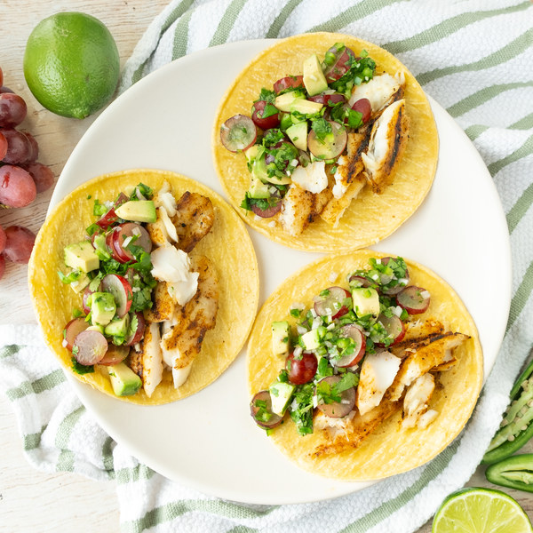

Grilled Fish Tacos with Spicy Avocado, Grape and Cilantro Salsa

Description
If you are looking for a refreshing twist to spice up your taco cravings, I'd highly recommend these grilled tilapia tacos. These delicious tacos are topped with a spicy non-traditional avocado salsa that introduces red grapes to enhance a sweet and tangy, balanced bite. Try out this recipe for a mouthful of blissfulness.
Ingredients
- 2 Avocados
- 1 small bunch of Cilantro
- 2 cloves Garlic
- 2 Jalapeno Peppers
- 2 Limes
- ½ lb Red Grapes
- 2 Shallots
- 12 small Corn Tortillas
- 1 ½ lb Tilapia Fillet
- ½ tsp Black Pepper
- 1 tsp Chili Powder
- ½ tsp Ground Coriander
- ½ tsp Ground Cumin
- 6 tsp Extra Virgin Olive Oil
- 1 tsp Honey
- ½ tsp Onion Powder
- ½ tsp Dried Oregano
- 1 tsp Salt
Steps
- Wash and dry fresh produce
- 2 limes
- 2 jalapeno peppers
- ½ lb red grapes
- 1 small bunch cilantro
- 2 avocados
- Juice limes into a medium bowl. Add honey and spices; whisk to combine the dressing.
- 1 tsp honey
- ½ tsp dried oregano
- ½ tsp salt
- ¼ tsp black pepper
- Quarter jalapeno peppers lengthwise; seed and remove ribs with a sppon. Finely dice and add to the bowl with the dresssing. (Be careful with jalapenos; do not touch your eyes and ensure you wash your hands after handling or wear gloves while preparing.)
- Peel and mince garlic and shallots. Add both to the bowl.
- 2 cloves garlic
- 2 shallots
- Thinly slice grapes and add to the bowl. Stir to combine, then set aside.
- Meanwhile, place oil and spices in a large bowl; stir to combine the spice paste.
- 4 tsp extra virgin olive oil
- 1 tsp chili powder
- ½ tsp ground cumin
- ½ tsp ground coriander
- ½ tsp onion powder
- ½ tsp salt
- ¼ tsp black pepper
- Preheat a grill pan, outdoor grill, or regular skillet over medium-high heat.
- While the grill pan heats up, place tilapia in the bowl with the spice paste and turn to coat.
- Once the grill pan is hot, coat with oil. Working in batches if necessary, add the tilapia and grill until the flesh is opaque and flakey, 3-4 minutes per side. Remove to plate.
- 2 tsp extra virgin olive oil
- Meanhile, shave cilantro leaves off the stems; discard stems and mince the leaves. Add to the bowl with the grapes.
- Halve and pit the avocados; slice crosswise while still in the skin and scoop out with a spoon. Add to the bowl and stir to combine salsa.
- Warm totillas in the grill pan, oven, or microwave (optional).
- Use a fork to break the tilapia into bite-sized pieces.
- To serve, divide tortillas between plates; fill with grilledtilapia and salsa. Enjoy!